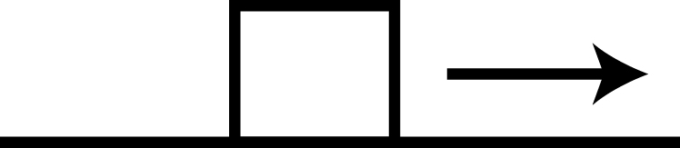

Warm-up [Solution]
As depicted below, a block is sliding to the right across a flat surface.
a. In which direction is the gravitational force acting on the block??

Answer: A
The gravitational force pulls all objects towards the center of the earth. For objects whose size is negligible in comparison to the earth, the gravitational force can be treated as pointing straight downwards.
b. In which direction is the normal force acting on the block?
Answer: B
An object experiences a normal force when it is in contact with another surface. The direction of the normal force always points in the direction perpendicular to the given surface. In the example above, the bottom of the block is resting on a table, thus the table exerts a normal force on the block pointing upwards.
c. in which direction is the frictional force?
Answer: C
The frictional force acts in the direction opposite to the direction of motion. Since the block is sliding to the right, friction acts in the opposite direction towards the left.